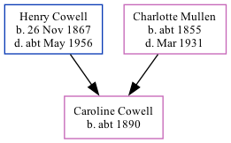

The child of Henry Cowell (a shepherd) and Charlotte MullenCaroline Cowell, the second cousin twice-removed on the mother's side of Nigel Horne, was born in East Malling, Kent, England c. 18901,2.
Throughout her life, she lived on Lunsford Lane in East Malling on 5 Apr 18913; and in Larkfield, Kent, England in 19012.
1891 England Census Online publication - Provo, UT, USA: The Generations Network, Inc., 2005.Original data - Census Returns of England and Wales, 1891. Kew, Surrey, England: The National Archives of the UK (TNA): Public Record Office (PRO), 1891. Data imaged from The National
1901 England Census Online publication - Provo, UT, USA: The Generations Network, Inc., 2005.Original data - Census Returns of England and Wales, 1901. Kew, Surrey, England: The National Archives of the UK (TNA): Public Record Office (PRO), 1901. Data imaged from the National (Relation to Head of House: Daughter)
1891 England, Wales & Scotland Census - Findmypast (was age 1 and the daughter of the head of the household)
Family Tree

Map
Generated by ged2site. Last updated on Feb 19, 2025